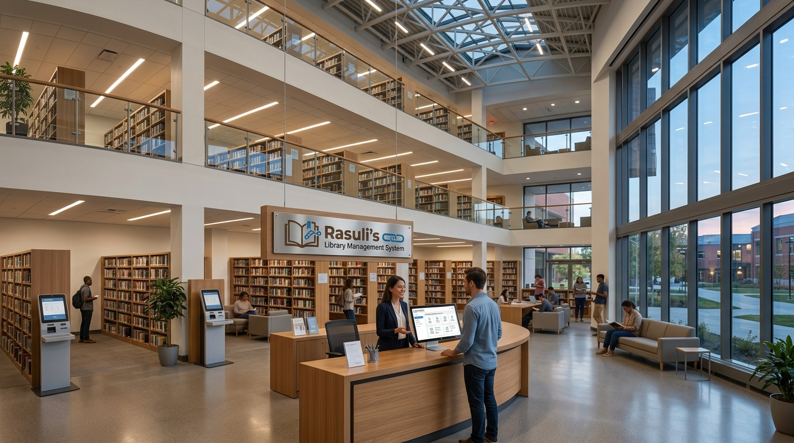

Programming
Start with syntax, then move to algorithms, data structures and clean software design.
Subject map
The Knowledge Hub groups learning into clear pathways so you can focus on what to study next instead of collecting random links.
Start with the subject that matches your current goal, then follow the connected ideas step by step.
Start with syntax, then move to algorithms, data structures and clean software design.
Build from functions and calculus into linear algebra and mathematical problem solving.
Compare institutions, political ideas and historical systems through structured reading.
Connect individual choices, markets and larger economic systems through models and examples.
Use anatomy and clinical references as organized background reading for health sciences.
Plan questions, evaluate sources, take useful notes and communicate conclusions clearly.
Choose wisely
You do not need to study everything at once. Pick one direction, define a small goal and build from there.
Choose a subject you genuinely want to understand, not only one that looks impressive.
Decide what you want to be able to explain, solve or build by the end of the week.
Use what you learn in one subject to strengthen your understanding of another.

Next step
The Resources page connects these subjects to books and learning material. The Study Plan page then turns them into weekly practice.
Browse resources